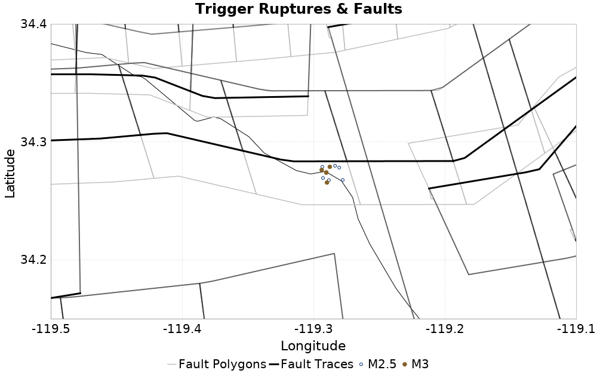

ETAS Configuration for ComCat data 1.5 d after ci38229234, Custom Region, Point Sources
| ComCat data 1.5 d after ci38229234, Custom Region, Point Sources |
|---|
| Num Simulations | 100000 |
| Start Time | 2019/11/09 00:53:27 UTC |
| Start Time Epoch Milliseconds | 1573260807250 |
| Duration | 10 Years |
| Includes Spontaneous? | false |
| Trigger Ruptures | 11 Trigger Ruptures |
| First: M3.2 at 2019/11/07 12:58:41 UTC |
| Last: M2.88 at 2019/11/08 21:55:02 UTC |
| Largest: M3.61 at 2019/11/08 13:29:38 UTC |
| Trigger Ruptures | (none) |
| Config Generated With | u3etas_comcat_config_builder.sh --start-at ci38229234 --end-now --region 34.4,-119.5,34.15,-119.1 --num-simulations 100000 --finite-surf-shakemap --finite-surf-shakemap-min-mag 6 --hpc-site USC_HPC --nodes 17 --hours 24 --queue scec |
Table Of Contents
Trigger Rupture Fault Map
(top)

Fault Distances To Triggers
(top)
| Section Name | Strike, Dip, Rake | # Hypos In Poly | Max Mag w/ Hypo In Poly | # Surfs In Poly | Max Mag w/ Surf In Poly | Min Dist To Any (km) | Min Poly Dist To Any (km) | Min Dist To Largest (km) | Min Poly Dist To Largest (km) |
|---|
| Ventura-Pitas Point | 257, 64, 60 | 11 | 3.61 | 11 | 3.61 | 4.749 | 0.000 | 5.005 | 0.000 |
| Sisar | 78, 29, 90 | 0 | | 0 | | 3.184 | 2.078 | 4.683 | 2.706 |
| Channel Islands Thrust | 264, 20, 90 | 0 | | 0 | | 6.768 | 6.711 | 8.217 | 8.179 |
| Oak Ridge (Onshore) | 71, 65, 90 | 0 | | 0 | | 8.517 | 5.304 | 10.133 | 5.903 |
| Red Mountain | 275, 56, 90 | 0 | | 0 | | 11.682 | 4.957 | 12.032 | 5.092 |
| Mission Ridge-Arroyo Parida-Santa Ana | 86, 70, 90 | 0 | | 0 | | 14.228 | 10.591 | 14.428 | 10.659 |
| Simi-Santa Rosa | 257, 60, 30 | 0 | | 0 | | 14.804 | 14.732 | 15.651 | 15.639 |
| Pitas Point (Lower)-Montalvo | 269, 16, 90 | 0 | | 0 | | 18.433 | 17.022 | 19.116 | 17.591 |
| Malibu Coast (Extension) alt 1 | 274, 74, 30 | 0 | | 0 | | 20.012 | 14.748 | 21.472 | 16.218 |
| Santa Ynez (East) | 82, 70, 0 | 0 | | 0 | | 20.654 | 19.465 | 20.773 | 19.515 |
| Anacapa-Dume alt 1 | 266, 45, 60 | 0 | | 0 | | 20.723 | 20.146 | 22.033 | 21.665 |
| San Cayetano | 273, 42, 90 | 0 | | 0 | | 24.620 | 21.132 | 25.171 | 21.413 |
| Channel Islands Western Deep Ramp | 117, 21, 90 | 0 | | 0 | | 24.676 | 23.851 | 26.019 | 25.139 |
(top)
{
"numSimulations": 100000,
"duration": 10.0,
"startTimeMillis": 1573260807250,
"includeSpontaneous": false,
"randomSeed": 1573260806419,
"binaryOutput": true,
"binaryOutputFilters": [
{
"prefix": "results_complete",
"descendantsOnly": false
},
{
"prefix": "results_m5_preserve_chain",
"minMag": 5.0,
"preserveChainBelowMag": true,
"descendantsOnly": false
}
],
"forceRecalc": false,
"simulationName": "ComCat data 1.5 d after ci38229234, Custom Region, Point Sources",
"numRetries": 3,
"outputDir": "${ETAS_SIM_DIR}/2019_11_08-ComCatdata1p5dafterci38229234_CustomRegion_PointSources",
"treatTriggerCatalogAsSpontaneous": false,
"triggerRuptures": [
{
"occurrenceTimeMillis": 1573131521630,
"comcatEventID": "ci38229234",
"mag": 3.2,
"latitude": 34.274,
"longitude": -119.29016670000001,
"depth": 11.41
},
{
"occurrenceTimeMillis": 1573131939400,
"comcatEventID": "ci38229250",
"mag": 3.42,
"latitude": 34.2761667,
"longitude": -119.29366670000002,
"depth": 14.56
},
{
"occurrenceTimeMillis": 1573215012790,
"comcatEventID": "ci38231562",
"mag": 3.37,
"latitude": 34.2655,
"longitude": -119.2896667,
"depth": 11.42
},
{
"occurrenceTimeMillis": 1573219757800,
"comcatEventID": "ci38231770",
"mag": 2.9,
"latitude": 34.2693333,
"longitude": -119.2926667,
"depth": 13.49
},
{
"occurrenceTimeMillis": 1573219757830,
"comcatEventID": "us6000696e",
"mag": 2.9,
"latitude": 34.2675,
"longitude": -119.28820000000002,
"depth": 10.05
},
{
"occurrenceTimeMillis": 1573219778880,
"comcatEventID": "ci38231786",
"mag": 3.61,
"latitude": 34.2788333,
"longitude": -119.2875,
"depth": 11.51
},
{
"occurrenceTimeMillis": 1573220240800,
"comcatEventID": "ci38231834",
"mag": 3.24,
"latitude": 34.274,
"longitude": -119.29016670000001,
"depth": 11.31
},
{
"occurrenceTimeMillis": 1573224888510,
"comcatEventID": "ci38232042",
"mag": 2.51,
"latitude": 34.2788333,
"longitude": -119.2931667,
"depth": 10.97
},
{
"occurrenceTimeMillis": 1573234683240,
"comcatEventID": "ci38232370",
"mag": 2.78,
"latitude": 34.2781667,
"longitude": -119.2803333,
"depth": 10.83
},
{
"occurrenceTimeMillis": 1573242966290,
"comcatEventID": "ci38232658",
"mag": 2.84,
"latitude": 34.2676667,
"longitude": -119.2776667,
"depth": 10.65
},
{
"occurrenceTimeMillis": 1573250102220,
"comcatEventID": "ci38232922",
"mag": 2.88,
"latitude": 34.2796667,
"longitude": -119.2835,
"depth": 12.73
}
],
"cacheDir": "${ETAS_LAUNCHER}/inputs/cache_fm3p1_ba",
"fssFile": "${ETAS_LAUNCHER}/inputs/2013_05_10-ucerf3p3-production-10runs_COMPOUND_SOL_FM3_1_SpatSeisU3_MEAN_BRANCH_AVG_SOL.zip",
"probModel": "FULL_TD",
"applySubSeisForSupraNucl": true,
"totRateScaleFactor": 1.14,
"gridSeisCorr": true,
"timeIndependentERF": false,
"griddedOnly": false,
"imposeGR": false,
"includeIndirectTriggering": true,
"gridSeisDiscr": 0.1,
"catalogCompletenessModel": "RELAXED",
"configCommand": "u3etas_comcat_config_builder.sh --start-at ci38229234 --end-now --region 34.4,-119.5,34.15,-119.1 --num-simulations 100000 --finite-surf-shakemap --finite-surf-shakemap-min-mag 6 --hpc-site USC_HPC --nodes 17 --hours 24 --queue scec",
"configTime": 1573260806419,
"comcatMetadata": {
"region": {
"minLatitude": 34.149999999999,
"maxLatitude": 34.400000000001,
"minLongitude": -119.500000000001,
"maxLongitude": -119.099999999999
},
"minDepth": -10.0,
"maxDepth": 24.0,
"minMag": 2.5,
"startTime": 1573131520630,
"endTime": 1573260806250
}
}